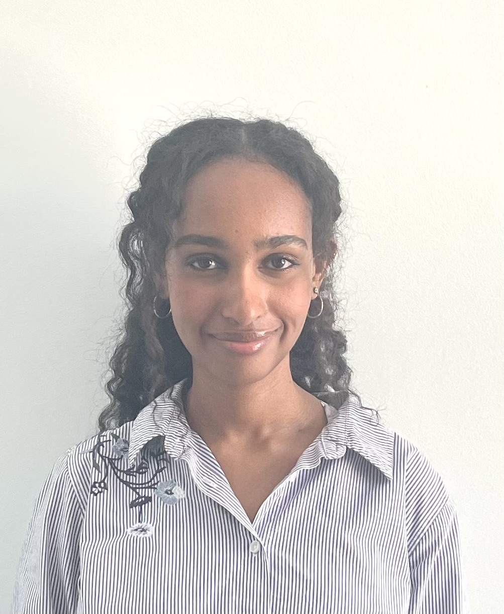

Meet Your Faculty
Shamini Ayyadhury

Postdoctoral Fellow
University of Toronto, University Health Network
Shamini Ayyadhury is a Postdoctoral Fellow with the University of Toronto and University Health Network. She is a computational biologist who works on a variety of spatial platforms and applies various methods for her analysis. She consults on a wide range of spatial (and single cell) projects.
She currently serves as the Director of Panoramics and consults for various spatial projects.
Amina Abow

Research Technician
Princess Margaret Genomics Centre
Amina is a Research Technician at the Princess Margaret Genomics Centre focusing on spatial transcriptomics assays, specifically the 10x Genomics assays Visium V2 and Visium HD. She completed her MSc. at the University of Toronto in the Laboratory Medicine and Pathobiology program.
Jawairia Atif

Jawairia is a recent PhD graduate from the MacParland lab at the University of Toronto with expertise in single-cell and spatial transcriptomics in human liver biology and cancer
Alyona Ivanova

PhD Candidate
Institute of Medical Sciences
University of Toronto & Brain Tumour Research Department, the Hospital for Sick Children
Joan Kant

Bioinformatics Analyst
Princess Margaret Cancer Centre
Joan obtained her BSc and MSc in Biomedical Engineering at Eindhoven University of Technology in The Netherlands. During her studies she became interested in using computational biology/bioinformatics to study cancer. In the Winter of 2022, she moved to Toronto for a 6-month internship in the Gaiti Lab studying cell-cell-communication in glioblastoma using scRNAseq. After her internship, she stayed on in the lab as a Bioinformatics Analyst. More recently, she started to dive into the world of spatial transcriptomics to further study cell-cell-communication.
Dina Karamboulas
Research Associate
SickKids
Dina is a Research Associate with the Miller/Kaplan and Frankland/Josselyn labs at Sickkids. She completed her PhD at UBC in Anatomy & Cell Biology. Over the years she has developed skills in computational analysis using scRNA-seq, scATAC-seq, scMultiome-seq, Xenium and Merscope analysis to understand the molecular mechanisms involved in the developing and adult brain.
Savannah Kilpatrick

Scientist III, Cell Therapy
Genentech, gRED
Savannah is a stem cell biologist passionate about 3D tissue generation and its applications to cell therapy. Her postdoctoral research at the University Health Network (Toronto, Canada) examined cell-type specific alterations in neural circuit development and cell migration using patient-derived brain organoids and assembloids. She paired this model system with spatial transcriptomics including the 10x Genomics Visium V2 and HD platforms, where she identified migratory and regionalized deficits in neural populations.
Melanie Peralta
Laboratory Manager
Mount Sinai
Melanie is a registered Medical Laboratory Technologist and member of CMLTO in good standing. She has over 25 years of experience in Histology; 3 years in diagnostic Histology (Dynacare and Mount Sinai) and was team lead for the Pathology research program at UHN for 22 years. She has recently changed roles and has returned to Mount Sinai as Laboratory Manager for Mount Sinai Services.
Trevor Pugh

Senior Scientist
Princess Margaret Cancer Centre
Dr. Trevor Pugh is a Senior Investigator and the Director of Genomics at OICR. He leads the OICR Genomics program, which brings together the Princess Margaret Genomics Centre, OICR’s Genome Research Platform, Translational Genomics Laboratory and Genome Sequence Informatics teams under an integrated initiative to support basic, translational and clinical research.
Gary Bader
Professor
University of Toronto
Gary Bader is a Professor at The Donnelly Centre at the University of Toronto and an expert in Computational Biology. The Bader lab is developing computational methods and an ecosystem theory of tissue function that considers cell-cell interactions, cell growth, and cell internal mechanisms, such as pathways, reactions, and causal relationships, to help understand development, cancer and regenerative wound healing processes.
Nia Hughes (she/her)

Program Manager, Bioinformatics.ca
Ontario Institute for Cancer Research Toronto, ON, Canada
Nia is the Program Manager for Bioinformatics.ca, where she coordinates the Canadian Bioinformatics Workshop Series. Prior to starting at OICR, she completed her M.Sc. in Bioinformatics from the University of Guelph in 2020 before working there as a bioinformatician studying epigenetic and transcriptomic patterns across maize varieties.
Zhibin Lu

Senior Manager, Digital Research
University Health Network
Toronto, ON, Canada
Zhibin Lu is a senior manager at University Health Network Digital. He is responsible for UHN HPC operations and scientific software. He manages two HPC clusters at UHN, including system administration, user management, and maintenance of bioinformatics tools for HPC4Health. He is also skilled in Next-Gen sequence data analysis and has developed and maintained bioinformatics pipelines at the Bioinformatics and HPC Core. He is a member of the Digital Research Alliance of Canada Bioinformatics National Team and Scheduling National Team.